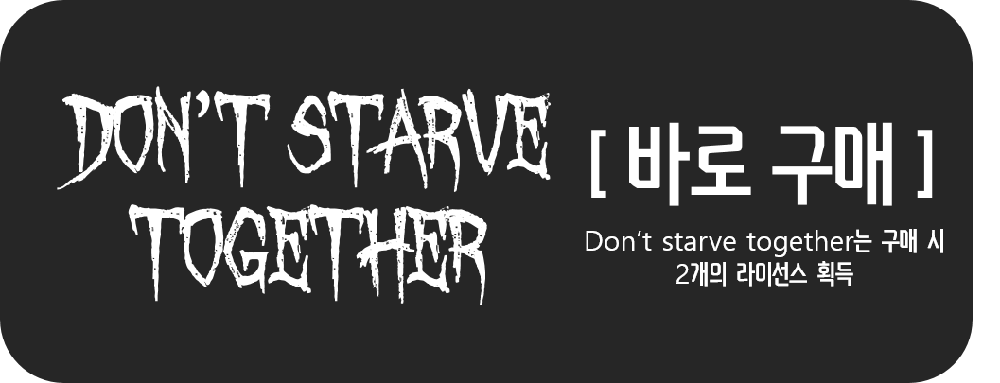

|
 |
 |


STORY
왕좌에 갇혀있다 윌슨과 자리를 바꿔 자유의 몸이 된 맥스웰,
하지만 정신력이 낮아져 악몽 괴물들에게 쫓기지만
화관으로 겨우 정신력을 회복한 후, 빛을 따라가다 왕좌에 갇혀 있어야 할 윌슨을 만난다.
윌슨은 자신을 속인 맥스웰과 치고박고 싸우다가 모닥불의 불이 꺼지자 겨우 다시 불을 피운 뒤,
서로의 안부를 묻는다.
이후 윌슨의 청사진과 맥스웰의 본영의 고대서를 이용해 게이트를 만들어 다른 캐릭터를 끌여오는데...
"친구, 안색이 안좋구만. 밤이 오기 전에 먹을 걸 찾는게 좋을거야!"